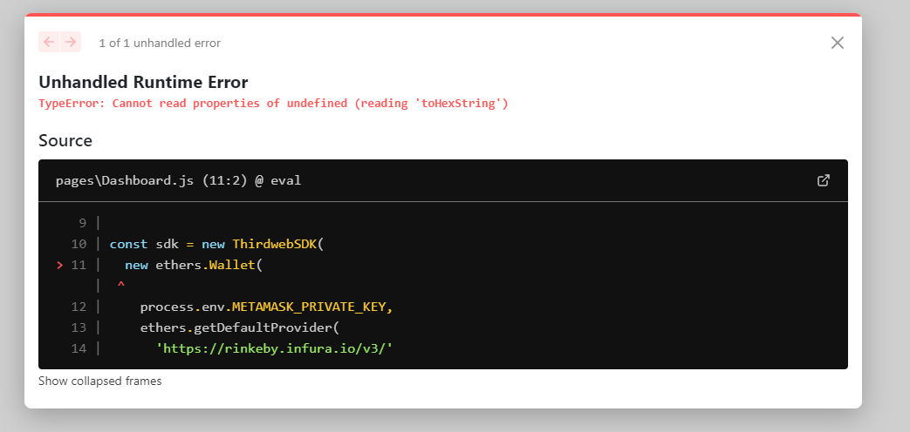

Cannot read properties of undefined (reading 'toHexString') in ether.js
Please don't judge, i've no idea what to do and how to do :)
My code: ether.js ( ^5.6.0)
import { ThirdwebSDK } from '@3rdweb/sdk' import { ethers } from 'ethers' const sdk = new ThirdwebSDK( new ethers.Wallet( process.env.METAMASK_PRIVATE_KEY, ethers.getDefaultProvider( 'https://rinkeby.infura.io/v3/' ) ) )
bug 
Answer
If you are using JavaScript and getting this error then You made a mistake while importing dotenv. you are using ".config" as property . Use it like a method like following
require("dotenv").config()
It will work.